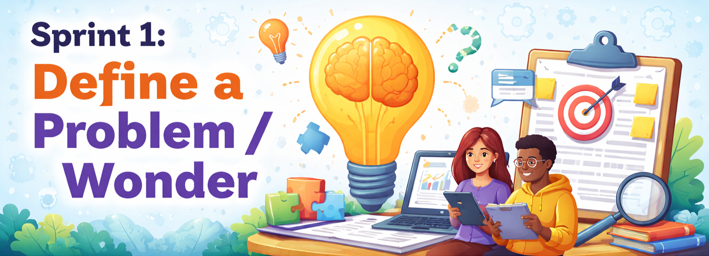

Define and empathize with a real CS education need
This sprint focuses on clarifying the problem (or wonder), understanding learners and stakeholders, and grounding your direction with evidence and theory.

Jump to the track you are working on.
Design and Development (D&D) track includes two types of projects: design and develop tools for computer science education (for example, AI tools for learning programming language), or design and develop new CS course (for example, a new introductory programming course for your current or future teaching assignment).
Complete these tasks early so you can draft a strong deliverable and get feedback on time.
Submit by Friday so the instructor can review and provide formative feedback before we meet.
Combine everything into one Google Doc (link supporting documents if needed) and submit a shareable link to this Google Spreadsheets file under the corresponding worksheet.
Make sure your Google doc allows your peers to leave comments.
Teacher Inquiry track aligns with the course "EDE 6325 Guided Teacher Inquiry", and provides you an opportunity to explore a question related to your CS teaching practice.
Complete these tasks early so you can draft a focused proposal and get feedback on time.
Submit by Friday so the instructor can review and provide formative feedback before we meet.
Combine everything into one Google Doc (link supporting documents if needed) and submit a shareable link to this Google Spreadsheets file under the corresponding worksheet.
Make sure your Google doc allows your peers to leave comments.
Review at least one peer’s submission (Problem Brief or Inquiry Proposal).